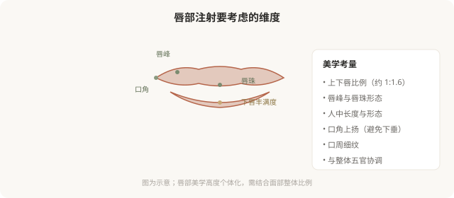

先说结论：唇部注射不只是“变大变饱满”，而是对唇形、比例、唇珠、人中、口周衰老迹象的综合调整。唇部是面部活动最频繁的区域之一，血管丰富，过度填充会立即出现僵硬、移位、不自然。所以唇部注射的核心不是“打多少”，而是“打哪里、为什么打”——清晰的目标和克制的剂量，比一味追求饱满更重要。
先想清楚为什么丰唇
唇部注射的合理诉求包括：
- 唇形重塑：唇峰、唇珠形态不佳，希望改善轮廓。
- 比例调整：上下唇比例、唇的纵向比例不协调。
- 衰老改善：随年龄唇部变薄、口周出现细纹、唇红缘模糊。
- 轻度不对称：先天或外伤后的不对称。
不合理诉求是：盲目追求夸张饱满（“网红唇”）、把丰唇当作提升自信的根本手段、对效果抱有不切实际的期待。唇部是表情器官，过度填充会直接损害它的功能——笑容、说话、进食都会受影响。
唇部注射的美学维度

过度填充为什么“显假”
“嘟嘟唇”“香肠嘴”的根源通常是：
- 剂量过大：超出唇部组织容量，材料堆积、外凸。
- 型号不对：硬型材料打唇，触感僵硬、活动受限。
- 层次不当：太浅容易不平、显颗粒；太深可能无效或移位。
- 忽略比例：只追求“大”，破坏上下唇比例和与五官的协调。
- 反复叠加：上次还没消退就补打，材料层次和量都失控。
唇部“自然”的门槛比其他部位更高——因为它在动态中、在视线焦点上，稍有过度就会被察觉。
唇部注射的风险
- 肿胀与淤青：唇部血管丰富，注射后肿胀明显，通常数天消退。
- 唇疱疹复发：有单纯疱疹病史者，注射可能诱发复发，需预防性用药。
- 结节与不平整：层次和剂量问题。
- 血管栓塞：唇部和口周血管丰富，栓塞虽罕见但严重（口周是相对高危区）。
- 过敏反应。
- 感染。
- 不对称、过度填充：可能需要溶解修整。
- 反复肿胀：材料吸水特性导致的间歇性肿胀。
唇部注射的几个原则
- 剂量克制：唇部对过度填充零容忍。一次少量、必要时两周后补。
- 柔软材料：用专门的唇部产品（柔软、低粘弹性、可铺展）。
- 保护功能：唇是表情和功能器官，不能为形态牺牲活动。
- 预防疱疹：有病史者提前用抗病毒药。
- 熟悉唇部血管：上下唇动脉走行需了解。
“唇珠”和“人中”的处理
唇珠（上唇中央的突起）和中面部协调有关，过度强调唇珠会显得不自然。人中（鼻底到上唇的沟槽）随年龄变平，但人中缩短手术和注射的适应证不同——把“人中长”误当成唇的问题处理，方向就错了。这些都需要医生判断，而不是照着网红模板打。
决策前的硬要求
面诊唇部注射，至少做到：选择有唇部注射经验的医生；当面讨论你想改善的具体维度（唇形／比例／衰老）；理解剂量克制和材料选择；讨论口周整体协调（口角、人中、细纹）；告知疱疹病史和过敏史；理解肿胀期和修整可能。“越大越好看”是唇部注射最常见的误区——真正的美唇是协调、自然、有活力的。
本文用于健康教育，不能替代面诊和个体化评估；唇部注射须在正规医疗机构由具备资质的医师开展。